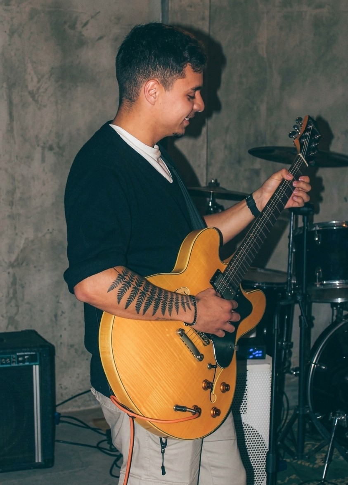

Nascido na música e criado na tecnologia. Sou guitarrista e estudante de Sistemas de Informação na Unicamp, onde mergulho fundo no universo do processamento digital de áudio.
Minha jornada musical é guiada pela busca do timbre que combina com o que está acontecendo. Influenciado por lendas como John Mayer, a modernidade de Mateus Asato e a pegada única do time de produção de bandas como: AnaVitória, Lagum, Daparte, entre outros grupos, construo pontes entre o orgânico e o eletrônico.
Mas não paro nas cordas: como desenvolvedor focado em áudio (JUCE/C++), eu não apenas toco o instrumento — eu entendo e modifico a forma como o som é processado, desde o DSP até os plugins que uso.
Onde a arte encontra a engenharia, e a criatividade se une à lógica.
Guitarra, violão e produção musical. Apaixonado por timbres orgânicos, R&B, Soul e Pop Rock. Sempre em busca da expressão melódica.
C++, Python, JUCE Framework e processamento digital de sinais. Criando ferramentas e plugins que transformam a forma como músicos interagem com o som.
Construo texturas sonoras no Reaper integrando simulações como Neural DSP e bibliotecas como Desolate Guitars. Emprego alguns vst´s como: TyrellN6 e PG-8X, Chow Tape Model, Cassette 909, valhalla supermassive, TDR NOVA, entre outros.
Projeto autoral que funde o Rock Clássico com a pegada moderna do Pop/Soul. Atuo na construção das harmonias e na identidade sonora das guitarras, explorando texturas que vão do clean ao saturado, sempre priorizando a emoção e a narrativa musical.
Banda com foco na reinterpretação de MPB, Blues e sucessos do Rock dos anos 80. O espaço perfeito para aplicar dinâmicas orgânicas na guitarra, garantindo uma execução com muito feeling que respeita as raízes desses estilos.
Experiência musical no circuito de Metal Progressivo. Essa participação foi fundamental para explorar ritmos não convencionais, refinar a técnica em arranjos mais pesados e consolidar com clareza minha identidade artística e escolhas estéticas de estilo hoje.
Pesquisa e desenvolvimento em processamento digital de sinais. Criação de plugins VST e estudos sobre a física do som aplicada à música. Do algoritmo ao timbre final, entendendo cada etapa da cadeia de áudio.
Disponível para shows, gravações, colaborações e projetos de tecnologia musical.